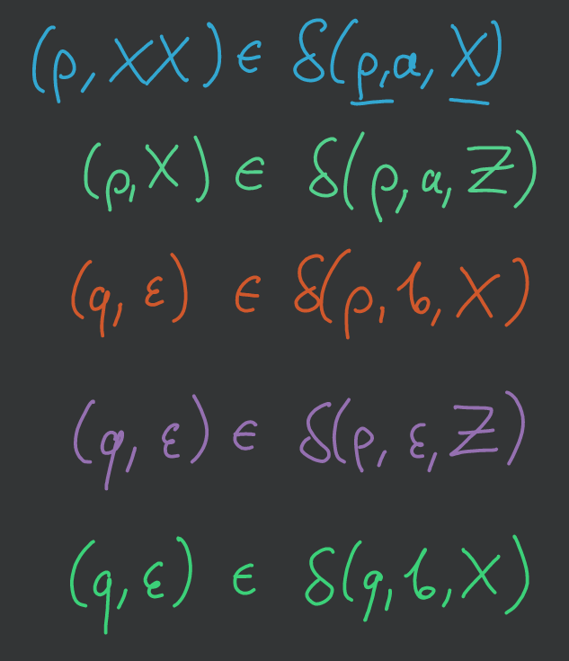
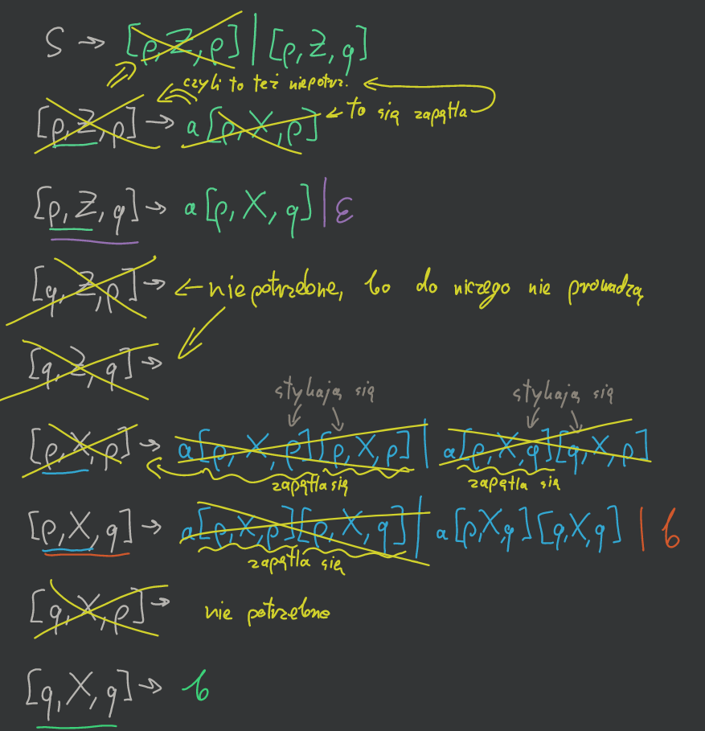

(2020-11-05)
Automat z dodatkową pamięcią w postaci stosu (widać tylko ostatnio włożony symbol).
Automatem ze stosem nazywamy \(M = (Q,\Sigma, \Gamma, \delta, q_0, Z_0, F)\), gdzie - \(Q\) — skończony zbiór stanów - \(\Sigma\) — alfabet wejściowy - \(\Gamma\) — alfabet stosowy - \(q_0 \in Q\) — stan początkowy - \(Z_0 \in \Gamma\) — symbol początkowy na stosie - \(F \in Q\) — zbiór stanów akceptujących (jeśli \(F = \emptyset\) to akceptujemy przez pusty stos) - \(\delta\) funkcja przejścia postaci: \(\delta: Q\times\left( \Sigma \cup \{\epsilon\} \right) \times \Gamma \to 2^{Q \times \Gamma^*}\)
— to trójka \((q, \alpha, \gamma)\), gdzie - \(q \in Q\) — stan automatu - \(\alpha \in \Sigma^*\) — nieprzeczytane jeszcze wejście - \(\gamma \in \Gamma^*\) — zawartość stosu (szczyt stosu z lewej strony)
\(\vdash^*\) — zwrotne i przechodnie domknięcie \(\vdash\),
\(\vdash^i\) — \(i\)-krotne złożenie \(\vdash\).
Język Akceptowany przez PDA \(M\) przy pustym stosie (\(F = \emptyset\)) to \[ N(M) = \left\{ w \in \Sigma^*: \exists p\in Q \enspace (q_0, w, Z_0) \vdash^* (p, \epsilon, \epsilon) \right\} \]
Język akceptowany przez PDA \(M\) przez stan końcowy to \[ L(M) = \left\{ w \in \Sigma^*: \exists p\in F \enspace \exists \gamma\in \Gamma^* \enspace (q, w, Z_0) \vdash^* (p, \epsilon, \gamma) \right\} \]
Oba sposoby akceptowania są równoważne.
Palindrom z gramatyką \(S \to 0S0|1S1|\#\)
Mamy maszynę \(M = \left( \{q_1,q_2\}, \{0,1\}, \{A,B,Z\}, \delta, q_1, Z, \emptyset \right)\)
| \(\delta\) | \((0, A)\) | \((0, B)\) | \((0, Z)\) | \((1, A)\) | \((1, B)\) | \((1, Z)\) | |
|---|---|---|---|---|---|---|---|
| \(q_1\) | \((q_1, AA)\) | \((q_1, AB)\) | \((q_1, A)\) | \((q_1, BA)\) | \((q_1, BB)\) | \((q_1, B)\) | |
| \(q_2\) | \((q_2, \epsilon)\) | — | — | — | \((q_2, \epsilon)\) | — |
Oczywiście mamy język \(N(M) = \left\{ ww^R: w \in \{0,1\}^* \right\}\).
PDA może być deterministyczny, jeśli w każdym przypadku możemy wykonać co najwyżej jedno przejście (czyli może też być zero przejść w przeciwieństwie do zwykłego DFA): 1. \(\forall q \in Q \enspace \forall Z \in \Gamma \enspace \delta(q, \epsilon, Z) \neq \emptyset \implies \forall a \in \Sigma \enspace \delta(q,a,Z) = \emptyset\) 2. \(\forall q \in Q \enspace \forall a \in \Sigma \cup \{\epsilon\} \enspace \forall Z \in \Gamma \enspace \left\lvert \delta(q, a, Z) \right\rvert \le 1\)
Niestety takie DPDA są słabsze od PDA.
Np. język z przykładu nie jest rozpoznawalny przez żaden DPDA.
Jeśli \(L\) jest językiem bezkontekstowym to istnieje PDA \(M\) taki, że \(L = N(M)\).
Załóżmy, że \(L\) nie zawiera \(\epsilon\) i jest zdefiniowany przez gramatykę bezkontekstową w postaci Greibach \(G = (N, T, P, S)\). Definiujemy PDA \(M\) następująco: - \(M = \left( \{q\}, T, N, \delta, q, S, \emptyset \right)\) - \(\delta(q, a, A) = \left\{ (q, \gamma): (A \to a\gamma) \in P \right\}\).
\(M\) symuluje wprowadzenie lewostronne gramatyki \(G\). Ponieważ \(G\) jest typu Greibach każdy kolejny napis w wyprowadzeniu lewostronnym ma formę \(x\alpha\), gdzie \(x \in T^*\) oraz \(\alpha \in N^*\). Maszyna \(M\) przechowuje \(\alpha\) na stosie po przeczytaniu przedrostka \(x\).
Teraz d-d indukcyjny po długości wyprowadzenia (liczby kroków), że \[ S \underset{G}{\Rightarrow}^* \iff (q, x, S) \underset{M}{\vDash}^* (q, \epsilon, \epsilon) \]
\(G = \left( \{A,B\}, \{a,b\}, \{A \to aAB|aB, B \to b\}, A \right)\)
A więc \(M = \left( \{q\}, \{a,b\}, \{A,B\}, \delta, q, A, \emptyset \right)\)
| \(\delta\) | \((a,A)\) | \((a, B)\) | \((b, A)\) | \((b, B)\) | \((\epsilon, A)\) | \((\epsilon, B)\) | |
|---|---|---|---|---|---|---|---|
| \(q\) | \((q, AB), (q, B)\) | — | — | \((q, \epsilon)\) | — | — |
Czyli na przykład mamy:
\(A \Rightarrow aAB \Rightarrow aaBB \Rightarrow aabB \Rightarrow aabb\).
I właśnie teraz równoważnie:
\((q, aabb, A) \vdash (q, abb, AB) \vdash (q, bb, BB), \vdash (q, b, B) \vdash (q, \epsilon, \epsilon)\).
Jeśli \(L = N(M)\) dla PDA \(M\) to \(L\) jest językiem bezkontekstowym.
Weźmy PDA \(M = (Q, \Sigma, \Gamma, \delta, q_0, Z_0, \emptyset)\). Konstruujemy gramatykę bezkontekstową \(G = (N, \Sigma, P, S)\), gdzie - \(N\) — zbiór obiektów postaci \([q, A, p]\) (\(p, q \in Q, A \in \Gamma\)) oraz nowy symbol \(S\) - \(P\) — zbiór produkcji postaci: - \(S \to [q_0, Z_0, q]\) dla każdego \(q \in Q\) - \([q, A, q_{m+1}] \to a[q_1, B_1, q_2] [q_2, B_2, q_3] \dots [q_m, B_m, q_{m+1}]\) dla dowolnych \(q, q_1, \dots, q_{m+1} \in Q\), dla każdego \(a \in \Sigma \cup \{\epsilon\}\) i dowolnych \(A, B_1, \dots, B_m \in \Gamma\) takich, że \((q_1, B_1, \dots, B_m) \in \delta(q, a, A)\) - \([q, A, p] \to a\) jeśli \((p, \epsilon) \in \delta(q, a, A)\).
Wyprowadzenie lewostronne w \(G\) symuluje ruchy \(M\) na wejściu \(x\).
\([q, A, p]\) wyprowadza \(x \iff M\) będąc w stanie \(q\) i mając na stosie \(A \alpha\) po wczytaniu \(x\) znajdzie się w stanie \(p\), na stosie będzie \(\alpha\) i \(\alpha\) nie była zmieniana i czytana w tym czasie.
Teraz dowód indukcyjny po liczbie kroków, że \[ [q, A, p] \underset{G}{\Rightarrow}^* x \iff (q, x, A) \underset{M}{\vdash}^* (p, \epsilon, \epsilon) \]
Mamy \(M = \left( \{p,q\}, \{a,b\}, \{X,Z\}, \delta, p, Z, \emptyset \right)\)
| \(\delta\) | \((a, X)\) | \((a, Z)\) | \((b, X)\) | \((b, Z)\) | \((\epsilon, X)\) | \((\epsilon, Z)\) | |
|---|---|---|---|---|---|---|---|
| \(p\) | \((p, XX)\) | \((p, X)\) | \((q, \epsilon)\) | — | — | \((q, \epsilon)\) | |
| \(q\) | — | — | \((q, \epsilon)\) | — | — | — |
Możemy powyższą tabelkę zapisać w następujący sposób:

Tworzymy produkcje:

i od razu je „przetwarzamy” na podstawie funkcji przejścia \(\delta\) i patrząc na dowód twierdzenia.
Następnie usuwamy niepotrzebne elementy, które albo się zapętlają, albo prowadzą do nikąd.